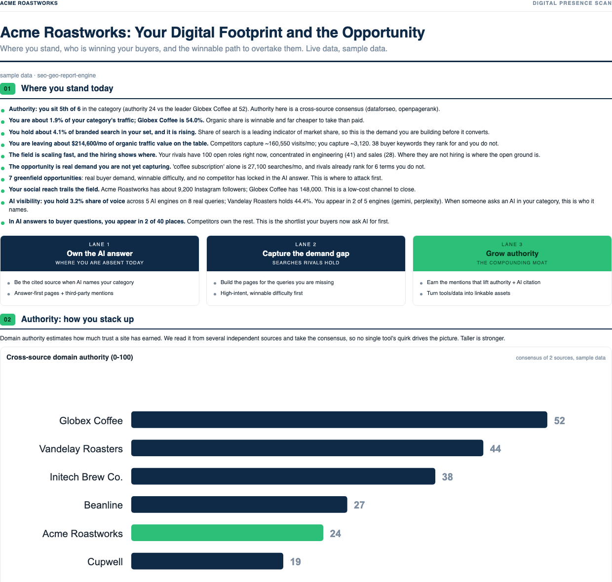
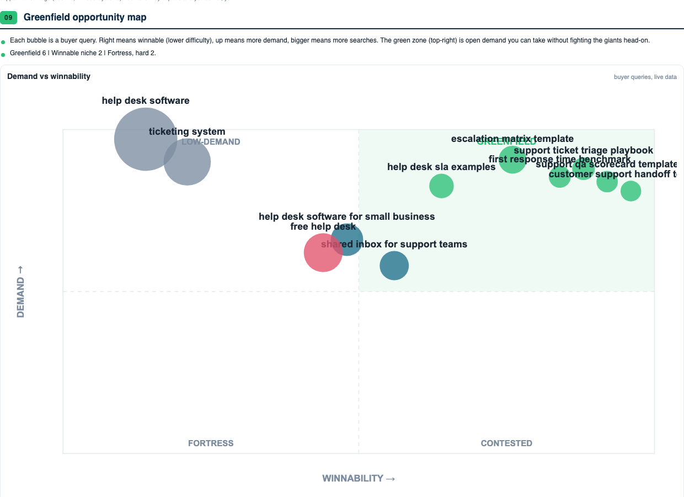
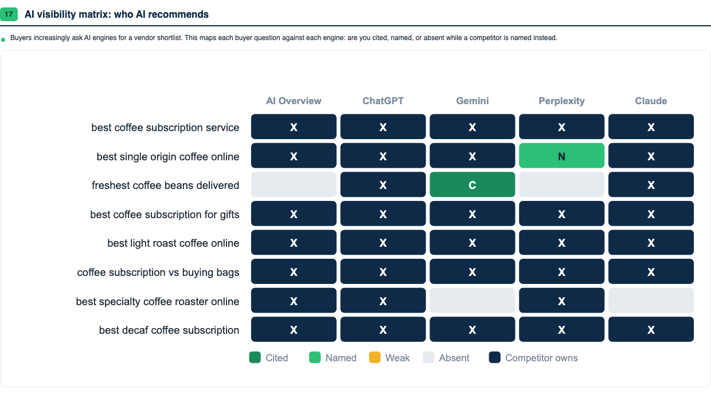
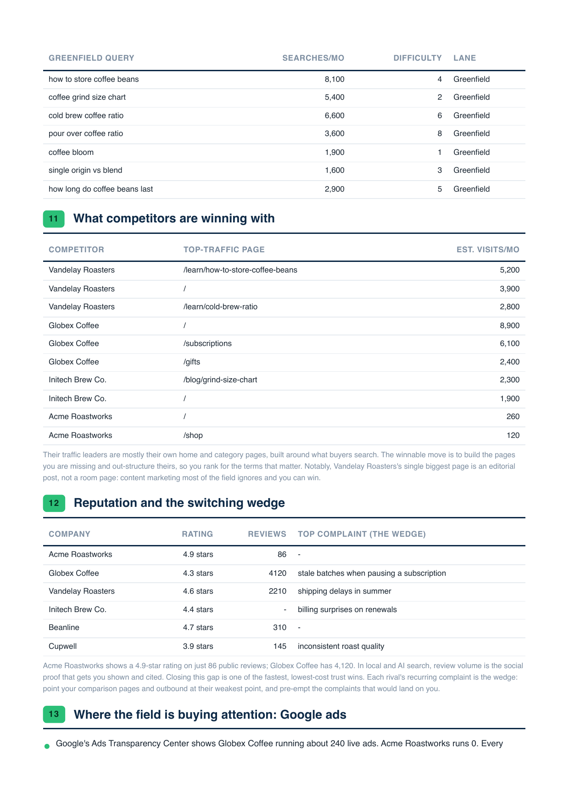
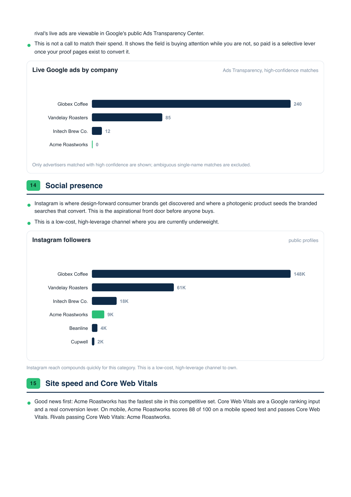

See where your product stands, who is winning its buyers, and the plan to close the gap
Email me for a report View on GitHub Sample report 1 (PDF) Sample report 2 (PDF) All capabilities
Both sample reports come from the fictional demo companies that ship with the repo, so you can reproduce every page yourself before adding a single API key.





Give it a website. Yours, a client's, or a competitor's.
Free to download and run. The demo report costs nothing and needs no accounts. A real scan of a company plus eight competitors costs about one to two dollars in API credit.
| Account | What it powers | Cost |
|---|---|---|
| DataForSEO | rankings, keywords, backlinks, AI answers, reviews, ads, speed tests | pay as you go, $1 to $2 per full scan |
| OpenRouter | reputation themes and cited live research | optional, cents |
| Apify | social following and public profile data | optional, free tier |
| PredictLeads, Open PageRank, Moz | funding signals and authority cross-checks | optional, free tiers |
The report is one part of a larger kit. There are 33 skills and 8 workflows covering keyword research, comparison pages, programmatic SEO, growth proposals and recurring client reports. See everything it can do.
The first-scan report is built to show the whole competitive field, not just a health score. It checks search demand, backlinks, competitor pages, reviews, ad activity, social reach, site speed, and AI-answer visibility, then turns that into a prioritized plan.
| Area | What you learn |
|---|---|
| AI search | whether ChatGPT, Gemini, Claude, Perplexity and Google AI Overviews name you or competitors |
| Search demand | which buyer queries exist, who ranks, and which greenfield terms are still open |
| Competitor pages | the pages already pulling traffic for rivals, including home, category, comparison and editorial pages |
| Reviews | ratings, review volume and recurring complaints that can become your switching wedge |
| Ads | which competitors are running live Google ads and where paid pressure is showing up |
| Authority | domain strength, backlinks, link gaps and the outreach list worth handing to a team |
| Performance | Core Web Vitals and site-speed gaps across the whole field |
| 01 | Where you stand today | headline findings computed from the scan |
| 02 | Domain authority | trust score for you and every rival |
| 03 | Backlinks and the link gap | who links to your rivals but not to you, junk filtered out |
| 04 | Press and awards | coverage you already have and whether it passes authority |
| 05 | Traffic share | how category organic visits split across the field |
| 06 | Share of search | who buyers look for by name |
| 07 | The demand you are missing | keywords rivals rank for that you do not |
| 08 | Rival funding and hiring | who raised, who is hiring, and where momentum points |
| 09 | Search demand and the gap | highest-intent queries with volume and difficulty |
| 10 | Greenfield opportunity map | demand against winnability for buyer queries |
| 11 | What competitors win with | each rival's top-traffic pages |
| 12 | Reputation and the wedge | ratings, review counts and recurring complaints |
| 13 | Google Ads footprint | who is buying attention and how many live ads they run |
| 14 | Social presence | follower benchmark on the channel that matters |
| 15 | Site speed | Core Web Vitals for the whole field |
| 16 | AI share of voice | how often each brand is named across AI engines |
| 17 | AI visibility matrix | buyer questions against five engines, cell by cell |
| 18 | The opportunity and the plan | the lanes to attack first |
| AI search | llm-visibility, geo-audit, aeo-content-patterns, ai-citation-sprint, serp-intel, web-research |
| SEO | keyword-research, competitor-analysis, backlink-analysis, technical-seo-audit, web-vitals, comparison-pages, programmatic-seo, schema-markup and more |
| Strategy | first-scan-report, opportunity-map, market-opportunity, positioning-messaging, customer-research, proposal-builder |
| Operations | report-generator, kpi-dashboard, agency-dashboard, seo-data-router, skill-navigator |
| Workflows | /client-report, /new-client, /discovery-audit, /growth-plan, /growth-proposal, /competitor-watch, /weekly-report, /monthly-report |
The dedicated capabilities page keeps the full reference in one place.
Working inside Claude Code, Codex, or another agent harness? Clone the repo and read CLAUDE.md for routing. The skills register automatically, every tool is plain stdlib Python with flags an agent can call directly, and a machine-readable summary lives at llms.txt. The capabilities page lists every skill, workflow and report section in one place.
Search rankings, backlinks, traffic, reviews, ads, social, site speed, and whether AI tools like ChatGPT and Gemini recommend you or your rivals.
Yes. It shows the search terms your rivals rank for and you do not, and ranks the easy wins first.
Their best pages, funding and hiring signals, ad footprint, backlinks, and the complaints that keep showing up in their reviews.
The software is free. The demo needs no accounts. A real scan of you plus 8 rivals costs about $1 to $2.
Getting your brand recommended inside AI answers. Think of it as SEO for ChatGPT and Gemini.
A plan. It ranks the exact moves to make first, based on demand and how easy each one is to win.
Often, yes. Press that never linked back to you. A rival's backlinks that are mostly low-quality junk. A good rating sitting on almost no reviews.
Agencies, founders, consultants, and marketers who need a fast competitive SEO and AI-search read.
The demo is simple to run, but real scans are easiest if you are comfortable running terminal commands and adding API keys.
Yes. It is MIT licensed and designed to produce handoff-ready client reports, briefs, page specs, schema, and strategy artifacts.
No. It creates reports and ready-to-implement recommendations. Your team still reviews, builds, and ships anything that goes live.
Start with a target domain, known competitors if you have them, and API keys for live search, review, backlink, ads, AI-answer, and speed data.
Clone the repo, add your keys, and the whole practice is yours. The skills, the report pipeline, and the playbooks that explain the methodology behind each one. MIT licensed, used in production, provided as-is.
Want this report for your company without touching a terminal? Email me your website and I will send the first scan back as soon as possible.